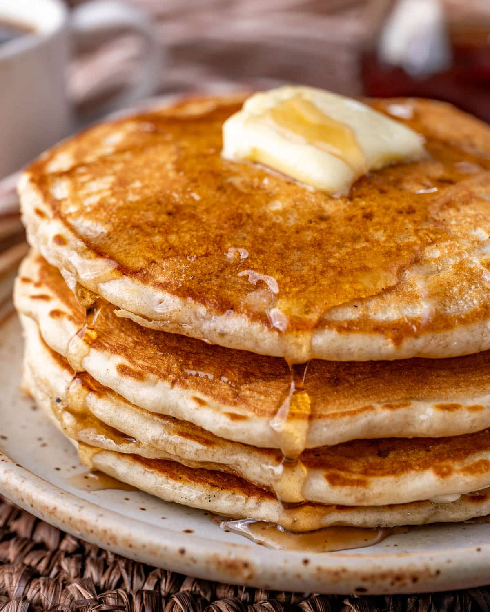

Pancakes

Look at these delicious pancakes
Soft and fluffy pancakes. Melted butter. Real maple syrup. Easy to make with simple ingredients.
Ingredients
- 11/2 cups all-purpose flour
- 31/2 teaspoons baking powder
- 1 tablespoon white sugar
- 1/4 teaspoon salt
- 11/4 cups milk
- 3 tablespoons butter, melted
- 1 large egg
- 1 cup blueberries
- 1 cup strwaberries
Make It
- Sift flour, baking powder, sugar, and salt together in a large bowl. Make a well in the center and add milk, melted butter, and egg. Mix until smooth.
- Heat a lightly oiled griddle or pan over medium-high heat. Pour or scoop the batter onto the griddle, using approximately 1/4 cup for each pancake; cook until bubbles form and the edges are dry, about 2 to 3 minutes. Flip and cook until browned on the other side. Repeat with remaining batter.
- Serve with butter and maple syrup to taste. Top with blueberries and strawberries.